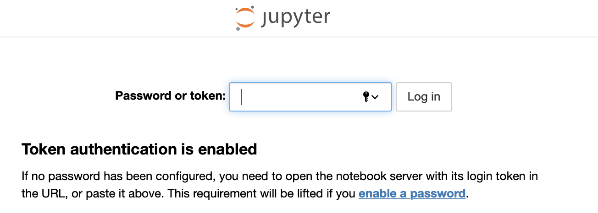

Preliminaries¶
The tutorial has several software dependencies:
MadGraph.
Pythia.
Delphes (optional).
Pytorch.
Jupyter.
Scipy.
MadMiner.
Installing all of this can take a long time. To avoid that, we will use Docker. Sinclert Pérez and Irina Espejo have built Docker images with every dependency installed, making them available on the Madminertool DockerHub organization.
We will still use our computer’s web browser to connect to the server as described in this tutorial: Running a Dockerized Jupyter Server for Data Science.
In addition, the pages with code have an “Interactive” button at the top, and if you click them you should be able to run the notebooks in the cloud (instead of on your laptop) thanks to Binder. However, the working area provided by Binder is temporary, and it will not save your files once the session ends.
Install Docker¶
To install Docker, go to the Download Docker Desktop page. The installation should work for macOS and Windows, but in the case of Windows, it requires Windows 10 Professional or Enterprise 64-bit. For old versions of Windows (or Windows Home) use Docker Toolbox (see instructions). Note there are some other small changes listed at the bottom of this page.
You may want to go into docker preferences and adjust the resources given to the Docker engine. In particular memory and swap space since this will involve machine learning.
Start Jupyter server in a container¶
In order to start an interaction session from a Docker container, we will spin up the MadMiner Docker image. The first time we spin it up, the image needs to be pulled from DockerHub, which will take about a minute.
docker run --rm \
-p 8888:8888 \
-v ~/madminer_shared:/home/shared \
-it madminertool/madminer-jupyter-env:0.3.3 \
/bin/bash
(If you are using Docker Toolbox on Windows, see section below).
Now you have a prompt inside the container. See what’s there and then go into the shared directory
cd /home/shared
echo 'hello world' >> test.txt
You might want to check that on your computer you see the recently created ~/madminer_shared/test.txt file. Then:
Get the MadMiner repository with tutorial notebooks:
git clone --depth=1 https://github.com/madminer-tool/madminer.git
Move to the directory with the example tutorial:
cd madminer/examples/tutorial_particle_physics
Start Jupyter inside the container:
jupyter notebook --ip 0.0.0.0 --port 8888 --allow-root
At the end of the process, you should see something like this:
To access the notebook, open this file in a browser:
file:///home/builder/.local/share/jupyter/runtime/nbserver-19-open.html
Or copy and paste one of these URLs:
http://(b27060a7c9a2 or 127.0.0.1):8888/?token=123copywhatyouseeherexyz
You will want to copy the text after the token (in your terminal, this is just an example).
In the example above, you would copy 123copywhatyouseeherexyz.
Now you should be able to connect to the Jupyter notebook server inside the container using your web browser.
Go to localhost:8888 in a new tab to see the Jupyter interface. At this stage,
paste the token you just copied and log in. Then you will be all set, and will see something like this:

Special instructions: Docker Toolbox for Windows¶
Thanks to Ioannis Karkanias, there is a way to run the Jupyter server using Docker Toolbox
First, the shared folder needs to be in the
Usersdirectory, as Docker Toolbox uses VirtualBox, which usesC:/Usersas the root path for all shared folders. Check the Docker Toolbox sharing folder instructions.docker run --rm \ -p 8888:8888 \ -v /C/Users/<USERNAME>/madminer_shared:/home/shared \ -it madminertool/madminer-jupyter-env:0.3.3 \ /bin/bash
Since Docker Toolbox uses a virtual machine and there is no
localhost, the URL used to reach the Jupyter log in interface will not belocalhost:8888. To check the public IP where you can reach the login page, we can use the Docker CLI, as described in this guide.docker-machine ip default
That command will expose the public IP to use, which must be followed by the Jupyter server default port (
:8888) to build the complete URL needed to access the web interface.